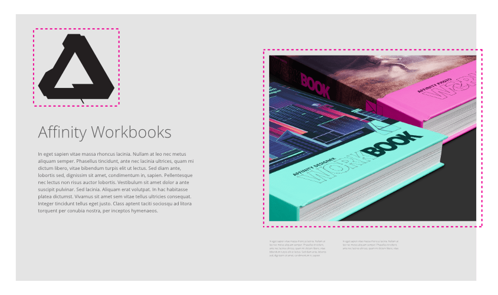

Embedding documents allows you to place any Affinity (Designer, Photo, Publisher, etc.), Photoshop, Illustrator, Freehand, SVG, EPS or PDF document into your current document without the need to open each file in turn.

Once you've added embedded documents onto your page, you can edit each document without leaving your current document.